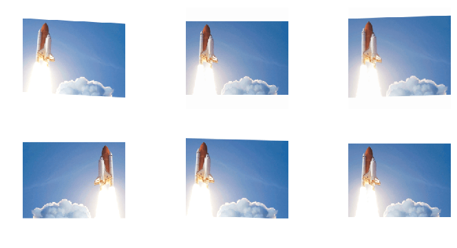
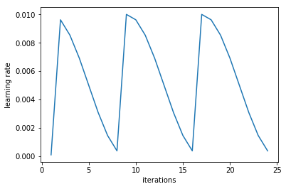

Recently I started working on fast.ai, this is my attempt at creating a network.
My training set contains 10 rockets and 10 towers

Using the 3 line program from the fast.ai library for the precompiled model resnet
0 is more rocket-like, 1 is more building-like
With having only 10 examples of each. It is amazing how well it did. Only misclassifying the CN tower just barely to being a rocket
I added a lot more photos to about 300 each for training and 15 for the validation
This time adding data augmentation, variable learning rate and unfreezing the model
Modify the image slightly to known effects of a camera. This is transformations that shift, zoom and flip the images. These are fed into the learning like any other image 
When a network is learning a function. It needs to start off high and reduce to gain more accuracy. This is included but also is restarted every epoch. This helps generalize the network, by trying avoiding narrow minimums. Creating a learning rate like this...
This is improved a little bit more by slowing down the learning rate on the later epochs.

Before training was done on the last few layers. This opens the beginning layers. Also much lower learning rates are used in decreasing order to the earlier layers
96.6% accuracy. With one error in classification
The confusion matrix output, to find what values were misclassified

Below are the images it was most uncertain of including the incorrect labeling of the rocket on the bottom left